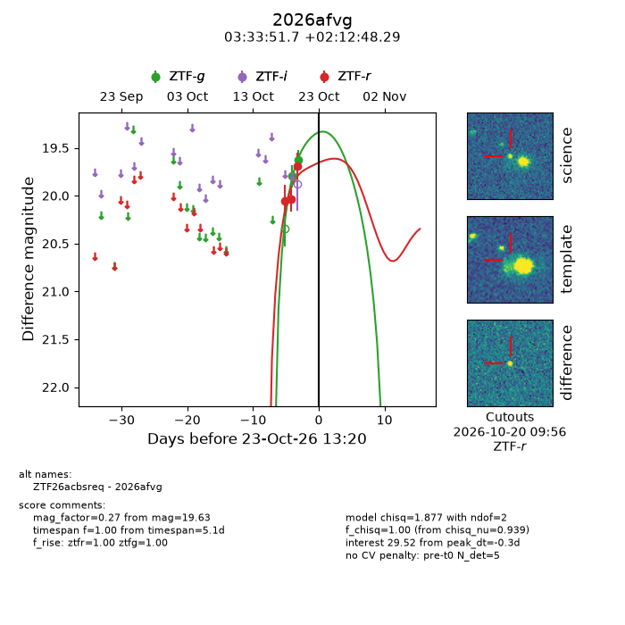
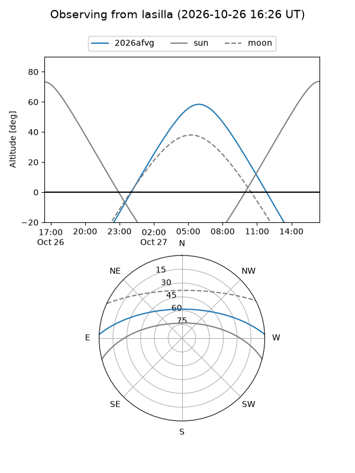
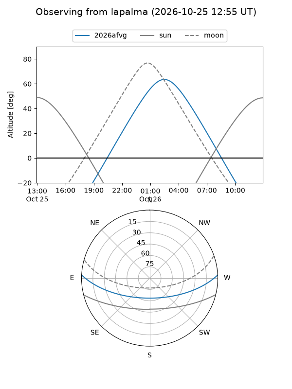
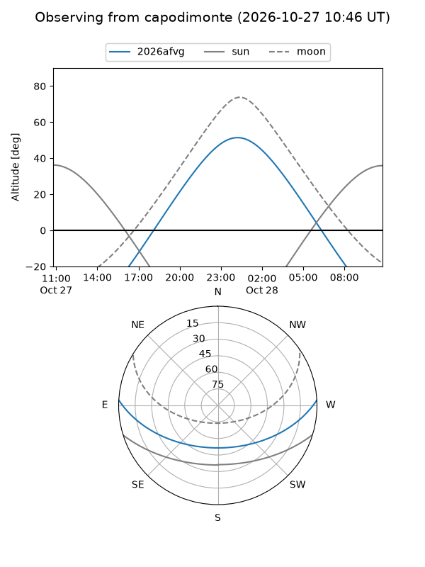
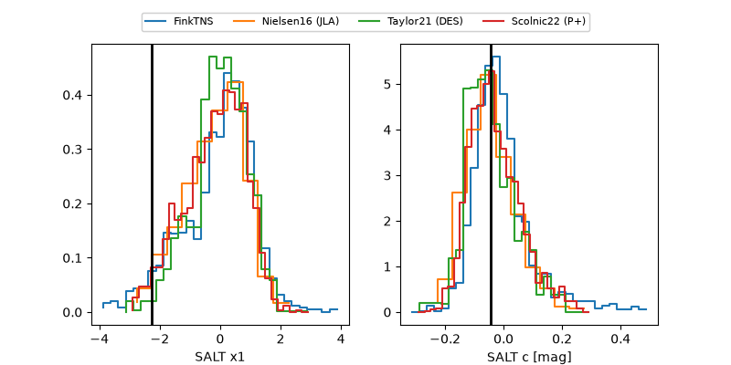

2026afvg
Target 2026afvg at 2026-10-23 13:22
Aliases and brokers:
FINK-ZTF: ztf.fink-portal.org/ZTF26acbsreq
Lasair-ZTF: lasair-ztf.lsst.ac.uk/objects/ZTF26acbsreq
ALeRCE-ZTF: alerce.online/object/ZTF26acbsreq
YSE-PZ: ziggy.ucolick.org/yse/transient_detail/2026afvg
TNS name: wis-tns.org/object/2026afvg
Direct TNS query: direct search
alt names
ZTF26acbsreq (ztf,fink_ztf)
2026afvg (tns,yse)
Coordinates:
equatorial (ra, dec) = 53.4652,+2.21341
equatorial (HMS+DMS) = 03:33:51.66,+02:12:48.29
galactic (l, b) = (182.6150,-41.11474)
Flags:
peak dt: -0.3
Photometry:
last ztfg=19.63, ztfr=19.69
2 ztfg, 3 ztfr detections
Lightcurve

Visibility



Additional plots
